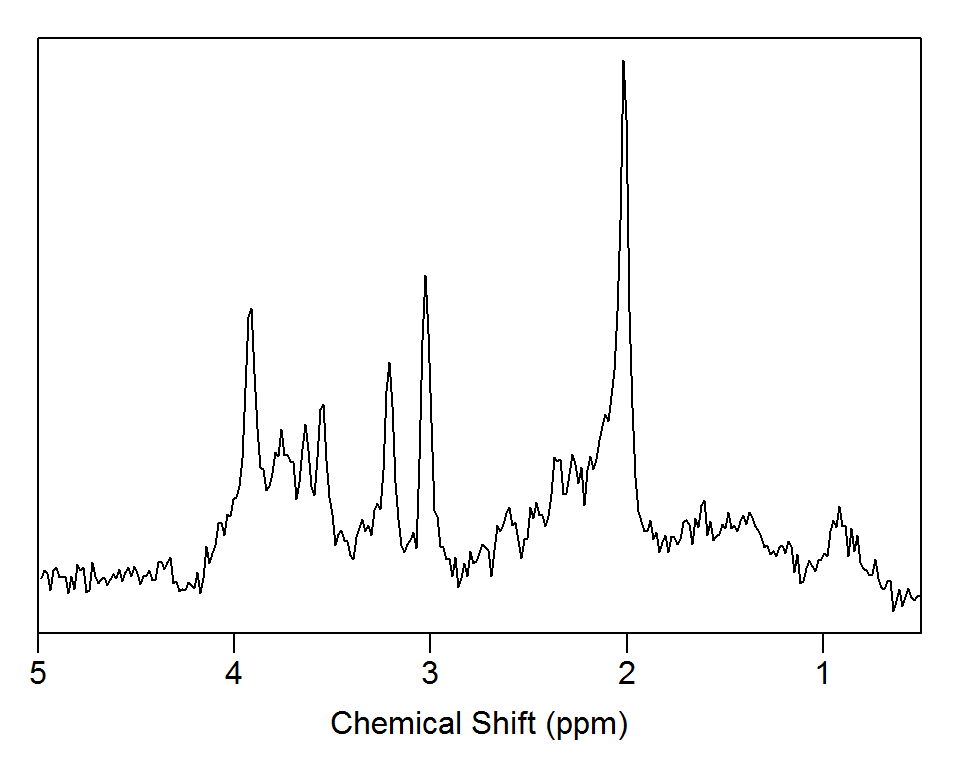

Overview
spant provides a full suite of tools to build automated anaysis pipelines for Magnetic Resonance Spectroscopy (MRS) data. The following features are included:
- Raw data import/export.
- Flexable data types to support single voxel, dynamic and spectroscopic imaging data types.
- Publication quality plotting.
- Extensive set of pre-processing steps (phasing, coil-combination, zero-filling, HSVD filtering…)
- Quantum mechanical based simulation for experimental design and basis-set generation.
- Set of metabolite, macromolecule and lipid parameters for typical brain analyses.
- VARPRO based fitting and interfaces for TARQUIN and LCModel for metabolite quantitation.
- Voxel registration to anatomical images for partial volume concentration corrections.
Installation
You can install the stable version of spant from CRAN:
install.packages("spant", dependencies = TRUE)Or the the development version from GitHub (requires devtools package):
install.packages("devtools")
devtools::install_github("martin3141/spant")Usage
library(spant)
fname <- system.file("extdata", "philips_spar_sdat_WS.SDAT", package = "spant")
# import raw data
mrs_data <- read_mrs(fname, format = "spar_sdat")
# output basic data structure
print(mrs_data)
#> MRS Data Parameters
#> ----------------------------------
#> Trans. freq (MHz) : 127.7861
#> FID data points : 1024
#> X,Y,Z dimensions : 1x1x1
#> Dynamics : 1
#> Coils : 1
#> Voxel resolution (mm) : 20x20x20
#> Sampling frequency (Hz) : 2000
#> Reference freq. (ppm) : 4.65
#> Spectral domain : FALSE
# plot data in the frequency domain
plot(mrs_data, xlim = c(5, 0.5))
# apply water filter and align to tNAA resonance
mrs_proc <- hsvd_filt(mrs_data)
mrs_proc <- align(mrs_proc, 2.01)
plot(mrs_proc, xlim = c(5, 0.5))
# simulate a typical basis set for short TE brain analysis
basis <- sim_basis_1h_brain_press(mrs_proc)
# output basis info
print(basis)
#> Basis set parameters
#> -------------------------------
#> Trans. freq (MHz) : 127.786142
#> Data points : 1024
#> Sampling frequency (Hz) : 2000
#> Elements : 27
#>
#> Names
#> -------------------------------
#> -CrCH2,Ala,Asp,Cr,GABA,Glc,Gln,
#> GSH,Glu,GPC,Ins,Lac,Lip09,
#> Lip13a,Lip13b,Lip20,MM09,MM12,
#> MM14,MM17,MM20,NAA,NAAG,PCh,
#> PCr,sIns,Tau
# plot basis signals
stackplot(basis, xlim = c(4, 0.5), labels = basis$names)
# perform VARPRO fitting to processed data
fit_res <- fit_mrs(mrs_proc, basis)
#>
|
| | 0%
|
|=================================================================| 100%
# plot the fit estimate, residual and baseline
plot(fit_res, xlim = c(4, 0.5))